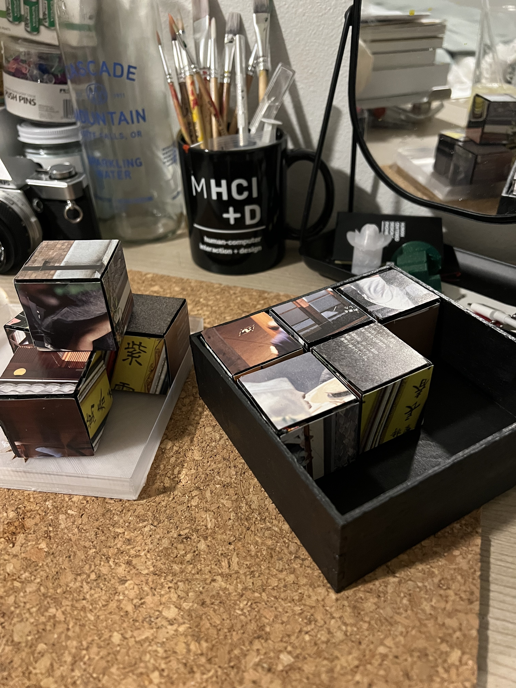
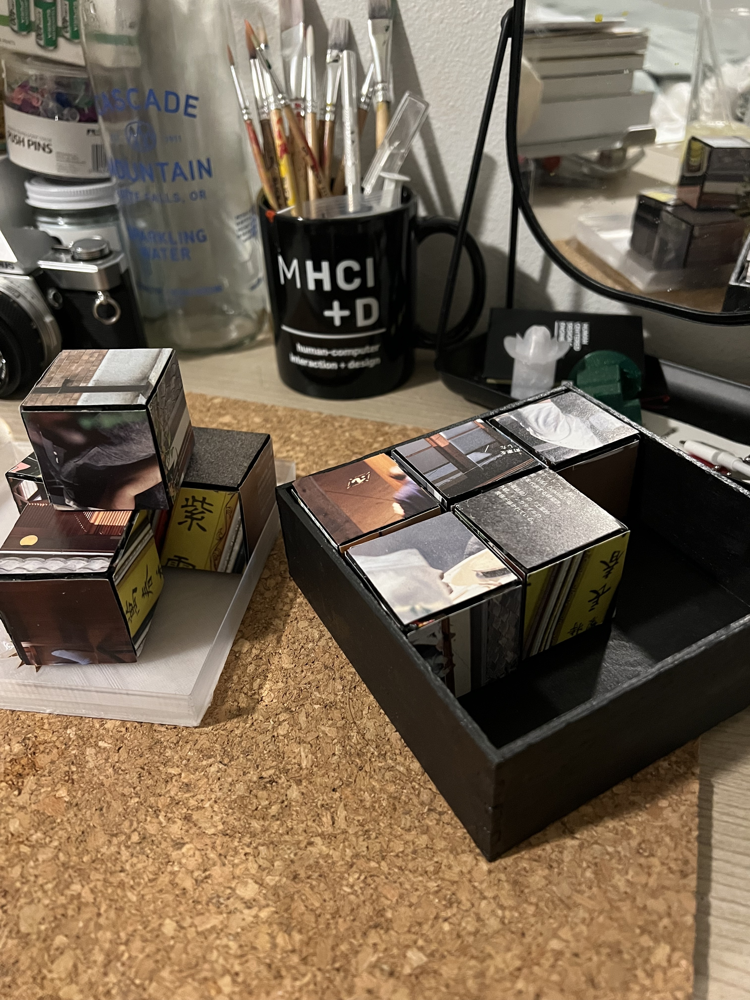

Bailey Dickey's Assignment 8!
Assignment 8: Final Project!
Final Product and Concept: Table Top Puzzle Block Set
Intrigued by the potential to construct something both decorative and interactive, I found the perfect combination of these features in the world of tabletop puzzles. Combining the image building found in jigsaw puzzles with the dimensionality and physicality of building blocks allows users to interact with the pieces in multiple ways. Users can stack block, complete the collaged images, or create new images by mixing different image sides. Creating a decorative frame-like container for the pieces also allows for the puzzle to be displayed as a decorative tabletop artifact. The lid with the decorative star cut out that doubles as a finger pull help contain the blocks in case you want to take the set on the go or simply display it with a cover.
 

Techniques
- Rhino (container box, puzzle blocks, lid)
- Grasshopper (parametric container box)
- Laser cutting (container box, puzzle blocks)
- 3D printing (lid, measured from real-world item)
- Interference fits (press-fit)
Technical Implementation and Source Files for the lid
I designed the lid by measuring my box and puzzle pieces once I assembled them all using a ruler and calipers. I took down all of the dimensions of the final puzzle box set and used them to inform the width and height of the lid. I made the lid rhino and used a variance of .75mm in order to ensure a moveable but snug fit. I designed the decorative star finger pull for the lid in AI and then imported the file into Rhino and extruded it and used boolean difference to cut the shape out of my lid. I then cut the lid in Cura and used the lowest quality print setting and a raft to ensure proper bed adhesion. I found that increasing the heat of my nozzle and bed while also slowing the speed of the print down helped improve bed adhesion and print quality without loosing much time.
Lid Source Files

Technical Implementation and Source Files for the Parametric Container
I wanted my container box to have a clean finish so I opted for a parametric box design. I followed the grasshopper tutorial linked in my last assignment post to create the adjustable box. I then moved the adjustments to fit the measurements I had taken of my 9 assembled puzzle blocks and adjusted a .75 mm variance to allow for proper fit. I decided to cut the bottom piece seperatley as I was planning on gluing it in to achieve a stronger hold. I then laser cut the container in the mill following the wood cutting instructions for my width of material and its width. I then assembled the box and glued the pieces to ensure a strong hold. I painted the box with black acrylic paint to acheive a clean finish.
Parametric Container Source Files
Technical Implementation and Source Files for the Press-fit Puzzle Blocks
I designed the press-ft puzzle blocks in the same way that I designed my press-fit box for a previous assignment using Rhino. Because my last press-fit box also used a material with similar dimensions I was able to easily figure out variance and print settings. I wanted 9 blocks in total so I assembled an AI sheet with the correct number of blocks and printed it in the mill using the laser cutter. Once the blocks were cut I assembled them and used a magazine to collage images onto the front of the blocks. See the source files below for more detailed measurements and designs.
Puzzle Block Source Files